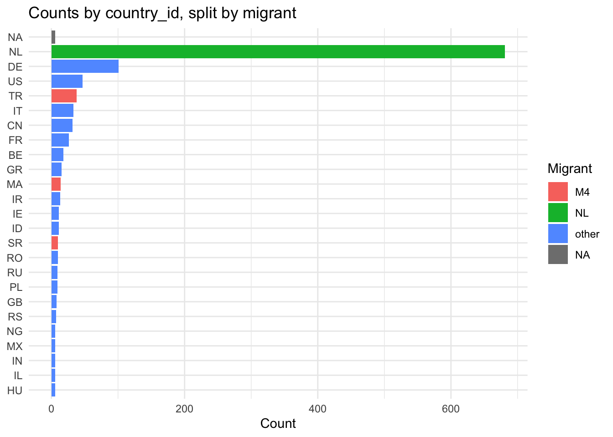
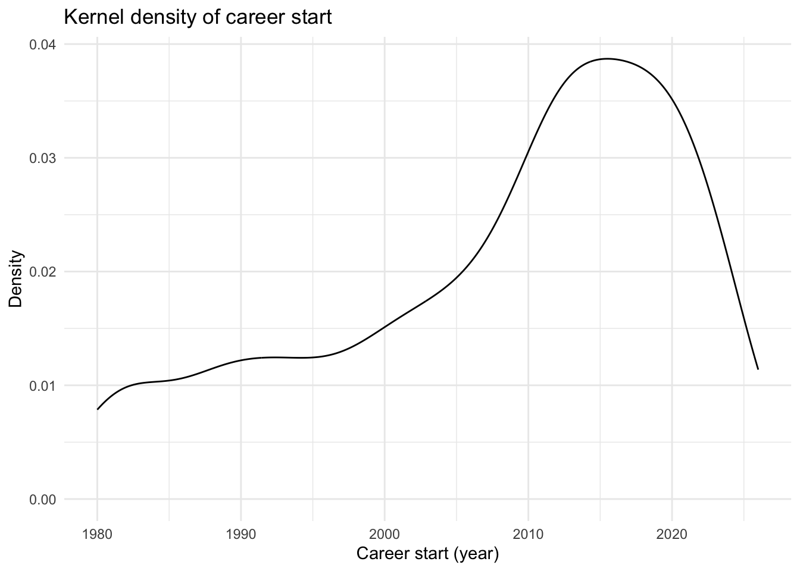
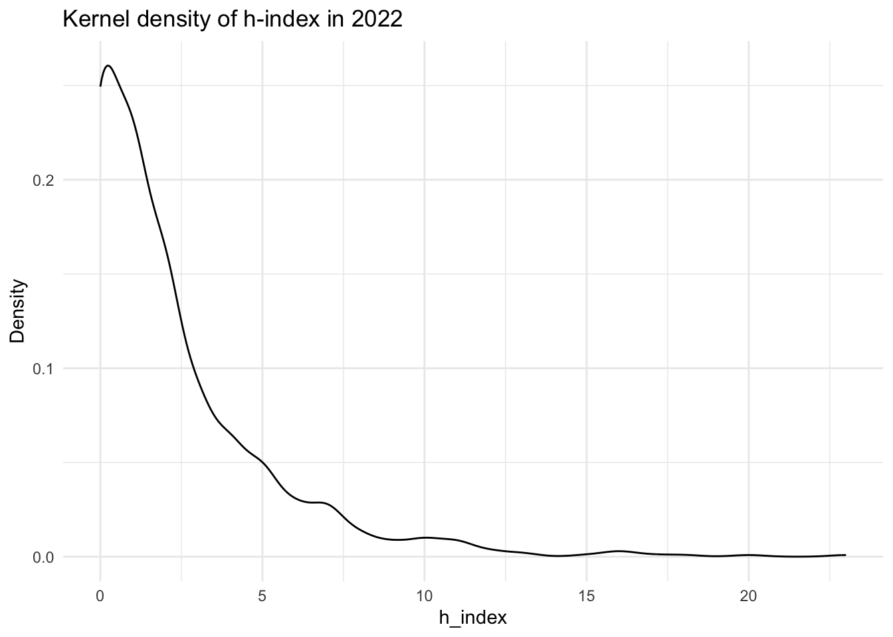
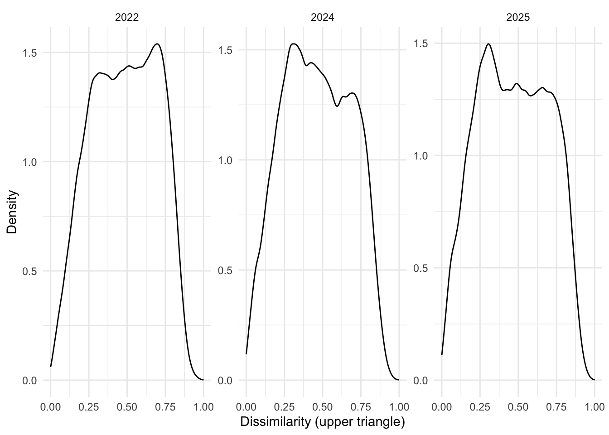
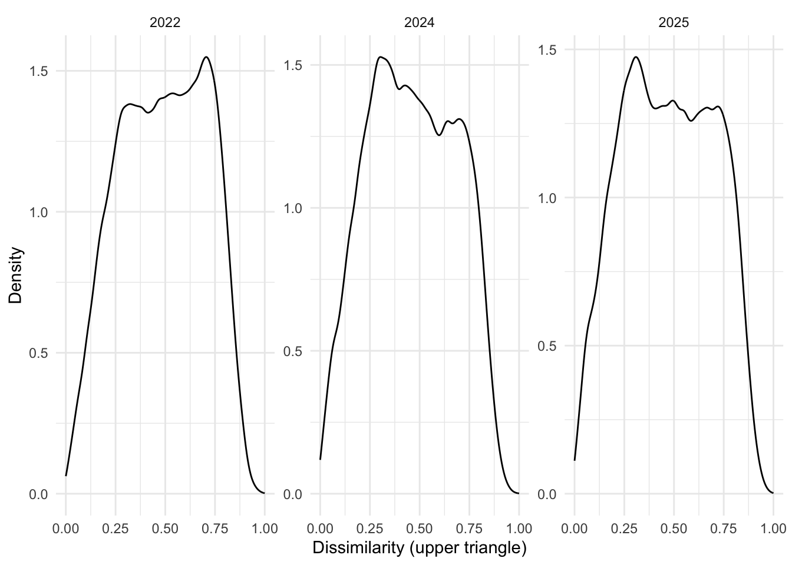
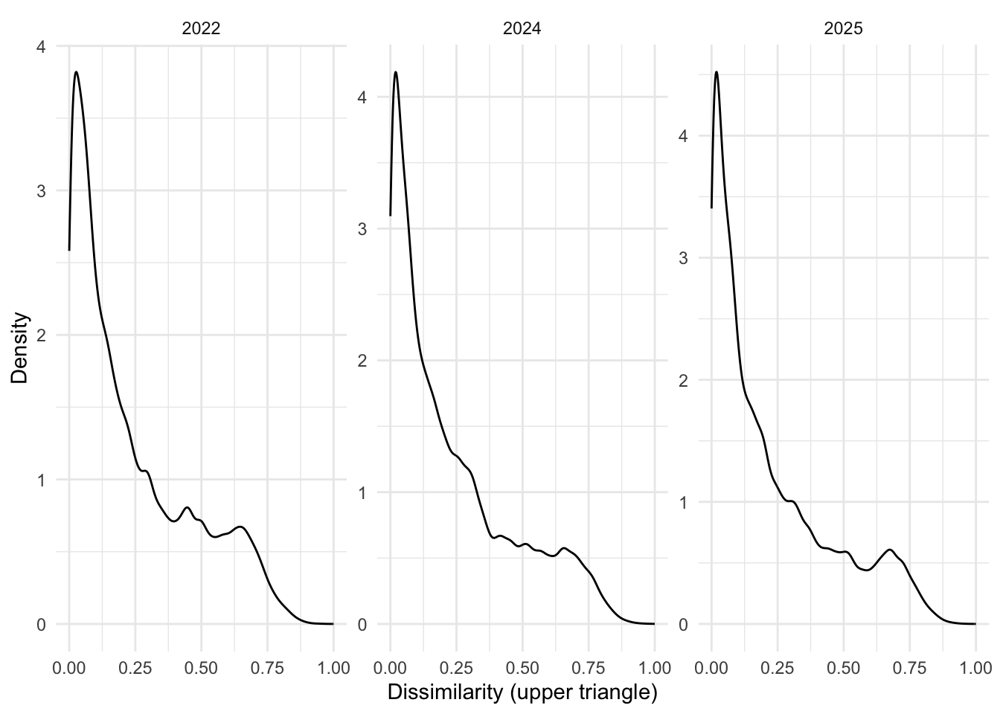
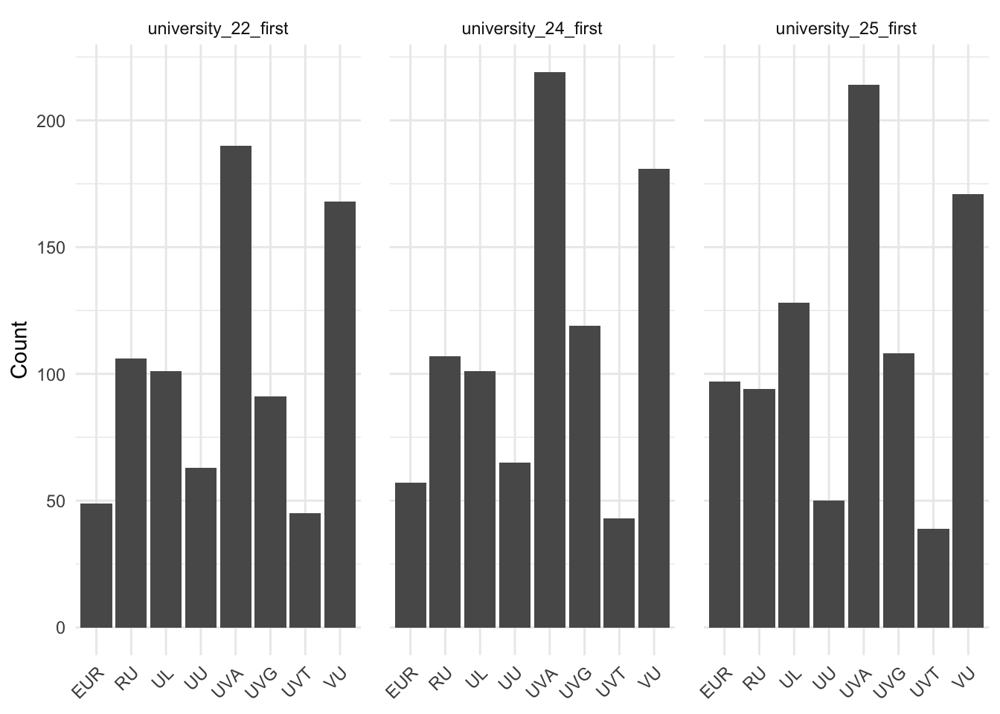

Operationalize Variables
Getting Started
Functions
categorize_ethnicity = function(data){
minority_codes = c('MA', 'TR', 'BQ', 'CW', 'SX', 'AW', 'SR')
country_codes = c('US', 'DE', 'BE')
data[['demographics']] = data[['demographics']] |>
mutate(migrant = case_when(
country_id == 'NL' ~ 'NL',
# country_id %in% country_codes ~ 'B3', # Big 3 origins
country_id %in% minority_codes ~ 'M4', # 4 Biggest Migrant groups NL
is.na(country_id) ~ NA_character_,
.default = "other"
)) |>
relocate(migrant, .after = 'country_id')
return(data)
}clean_affilliations = function(data){
valid_universities = c(
'uu', 'uva', 'rug', 'ru', 'ucu', 'leiden', 'eur',
'uvt', 'uvg', 'vu', 'wur'
)
data[['demographics']] = data[['demographics']] |>
mutate(
# get the first valid affiliation per author year
across(
starts_with('university'),
# clean and split university strings
~ .x |> str_replace('\\.', '/') |>
str_to_lower() |>
str_split(pattern = '/') |>
# select the first of valid universities
sapply(\(chunks){
chunks[chunks %in% valid_universities][1]
}) |>
str_to_upper() |>
str_replace('LEIDEN', 'UL') |>
str_replace('RUG', 'UVG') |>
str_replace('UCU', 'UU'),
.names = "{.col}_first"
),
# calculate the number of affiliations
across(
starts_with('university') & !ends_with('first'),
~ .x |> str_replace('\\.', '/') |>
str_to_lower() |>
str_split(pattern = '/') |>
sapply(\(chunks){
length(chunks[!is.na(chunks)])
}),
.names = "{.col}_k"
)
)
return(data)
}set_time_matrix = function(){
time_distance = c(
UVG = c(0, NA, NA, NA, NA, NA, NA, NA),
VU = c(2.52, 0, NA, NA, NA, NA, NA, NA),
UVA = c(2.58, 0.52, 0, NA, NA, NA, NA, NA),
UL = c(3.12, 0.91, 1.04, 0, NA, NA, NA, NA),
EUR = c(3.17, 1.32, 1.38, 1.18, 0, NA, NA, NA),
EVT = c(3.30, 1.70, 1.57, 1.67, 1.35, 0, NA, NA),
UU = c(2.47, 0.98, 0.88, 1.40, 1.33, 1.36, 0, NA),
RU = c(2.83, 1.90, 1.68, 2.23, 2.33, 1.30, 1.53, 0)
)
labs = c('UVG', 'VU', 'UVA', 'UL', 'EUR', 'UVT', 'UU', 'RU')
# convert to symmetrical matrix
T = matrix(time_distance,
ncol = 8, nrow = 8, dimnames = list(labs, labs)
)
T[lower.tri(T)] = T[upper.tri(T)]
return(T)
}#' Create long affiliation table (uid-year-first affiliation)
create_affiliations_long <- function(demographics,
affix = "first",
year_regex = "\\d{2}") {
demographics %>%
select(uid, ends_with(affix)) %>%
pivot_longer(
cols = ends_with(affix),
names_to = "name",
values_to = "value"
) %>%
mutate(year = paste0("20", str_extract(name, regex(year_regex)))) %>%
select(uid, year, value)
}
#' Convert travel-time matrix T to long lookup table
create_time_lookup <- function(T) {
as.data.frame(as.table(T)) %>%
as_tibble() %>%
rename(value_i = Var1, value_j = Var2, distance = Freq)
}#' Create dyad table per year with affiliation values and travel-time distance
create_pairs_with_distance <- function(affiliations, T_long, drop_self = FALSE) {
aff_key <- affiliations %>% distinct(year, uid, value)
pairs <- aff_key %>%
group_by(year) %>%
summarise(pairs = list(crossing(uid_i = uid, uid_j = uid)), .groups = "drop") %>%
unnest(pairs)
if (drop_self) {
pairs <- pairs %>% filter(uid_i != uid_j)
}
pairs %>%
left_join(aff_key, by = c("year", "uid_i" = "uid")) %>%
rename(value_i = value) %>%
left_join(aff_key, by = c("year", "uid_j" = "uid")) %>%
rename(value_j = value) %>%
drop_na(value_i, value_j) %>%
left_join(T_long, by = c("value_i", "value_j")) %>%
drop_na(distance)
}#' Build a full (all_uids x all_uids) matrix for a single year from dyad table
make_year_matrix <- function(df_year, all_uids) {
M <- matrix(
NA_real_,
nrow = length(all_uids),
ncol = length(all_uids),
dimnames = list(all_uids, all_uids)
)
ii <- match(df_year$uid_i, all_uids)
jj <- match(df_year$uid_j, all_uids)
keep <- !is.na(ii) & !is.na(jj)
M[cbind(ii[keep], jj[keep])] <- df_year$distance[keep]
M
}#' Create list of distance matrices per year (same dimnames for all years)
create_distance_matrices <- function(pairs_by_year, all_uids) {
pairs_by_year %>%
select(year, uid_i, uid_j, distance) %>%
group_by(year) %>%
group_split() %>%
set_names(map_chr(., ~ unique(.x$year))) %>%
map(~ make_year_matrix(.x, all_uids))
}add_distances <- function(data, topics){
# affiliations
affiliations <- create_affiliations_long(data[["demographics"]])
# time lookup
T = set_time_matrix()
T_long <- create_time_lookup(T)
# dyads + distance
pairs_by_year <- create_pairs_with_distance(affiliations, T_long)
# global uid set / ordering
all_uids <- colnames(topics[["dissim"]][["field"]][["2022"]])
# matrices per year
data[['distances']] <- create_distance_matrices(pairs_by_year, all_uids)
return(data)
}Application
[1] "SAVING: ./data/analysis/20260305data.Rds"[1] "SAVING: ./data/analysis/20260305topics.Rds"Migrate these plots to another document
top_n <- 25
data[["demographics"]] |>
count(country_id, migrant, name = "n") |>
arrange(n) |>
tail(25) |>
mutate(country_id = factor(country_id, levels = unique(country_id))) |>
ggplot(aes(x = country_id, y = n, fill = migrant)) +
geom_col() +
coord_flip() +
labs(x = NULL, y = "Count", fill = "Migrant", title = "Counts by country_id, split by migrant") +
theme_minimal()



data[["demographics"]] |>
group_by(position_22) |>
summarise(has_valid_works = mean(!is.na(career_start)), .groups = "drop") |>
arrange(desc(has_valid_works)) |>
mutate(position_22 = factor(position_22, levels = position_22)) |>
ggplot(aes(x = position_22, y = has_valid_works)) +
geom_col() +
coord_flip() +
scale_y_continuous(limits = c(0, 1)) +
labs(
x = NULL,
y = "Share with valid works",
title = "Valid works by position (2025)"
) +
theme_minimal()
years <- c("2022", "2024", "2025")
dens_df <- map_dfr(years, function(y) {
m <- topics[["dissim"]][["subfield"]][[y]]
tibble(
year = y,
dissim = m[upper.tri(m)]
)
}) |>
filter(!is.na(dissim))
ggplot(dens_df, aes(x = dissim)) +
geom_density() +
facet_wrap(~ year, nrow = 1, scales = "free_y") +
theme_minimal() +
labs(x = "Dissimilarity (upper triangle)", y = "Density")
years <- c("2022", "2024", "2025")
dens_df <- map_dfr(years, function(y) {
m <- topics[["dissim"]][["field"]][[y]]
tibble(
year = y,
dissim = m[upper.tri(m)]
)
}) |>
filter(!is.na(dissim))
ggplot(dens_df, aes(x = dissim)) +
geom_density() +
facet_wrap(~ year, nrow = 1, scales = "free_y") +
theme_minimal() +
labs(x = "Dissimilarity (upper triangle)", y = "Density")
years <- c("2022", "2024", "2025")
dens_df <- map_dfr(years, function(y) {
m <- topics[["dissim"]][["subfield"]][[y]]
tibble(
year = y,
dissim = m[upper.tri(m)]
)
}) |>
filter(!is.na(dissim))
ggplot(dens_df, aes(x = dissim)) +
geom_density() +
facet_wrap(~ year, nrow = 1, scales = "free_y") +
theme_minimal() +
labs(x = "Dissimilarity (upper triangle)", y = "Density")
plot_df <- data[["demographics"]] |>
select(uid, gender, university_22_first, university_24_first, university_25_first) |>
pivot_longer(
cols = starts_with("university_"),
names_to = "year",
values_to = "university"
) |>
mutate(
year = case_when(
year == "university_22_first" ~ "2022",
year == "university_24_first" ~ "2024",
year == "university_25_first" ~ "2025",
TRUE ~ year
)
) |>
filter(!is.na(university), university != "", !is.na(gender), gender != "") |>
count(year, university, gender, name = "n") |>
group_by(year, university) |>
mutate(prop = n / sum(n)) |>
ungroup()
ggplot(plot_df, aes(x = university, y = prop, fill = gender)) +
geom_col() +
facet_wrap(~ year, scales = "free_x") +
scale_y_continuous(labels = scales::percent_format(accuracy = 1)) +
theme_minimal() +
theme(axis.text.x = element_text(angle = 45, hjust = 1)) +
labs(x = NULL, y = "Gender composition", fill = "Gender")
plot_df <- data[["demographics"]] |>
select(university_22_first, university_24_first, university_25_first) |>
pivot_longer(
cols = everything(),
names_to = "panel",
values_to = "university"
) |>
filter(!is.na(university), university != "") |>
count(panel, university, name = "n")
ggplot(plot_df, aes(x = university, y = n)) +
geom_col() +
facet_wrap(~ panel, scales = "free_x") +
theme_minimal() +
theme(
axis.text.x = element_text(angle = 45, hjust = 1),
panel.spacing = unit(1, "lines")
) +
labs(x = NULL, y = "Count")